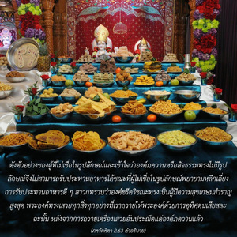
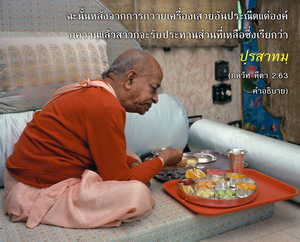

จากความโกรธความหลงงมงายเกิดขึ้น จากความหลงงมงายทำให้ความจำเกิดความสับสน เมื่อความจำสับสนปัญญาก็จะสูญเสียไป และเมื่อปัญญาได้สูญเสียไป เขาก็จะตกต่ำลงไปในสระวัตถุอีกครั้งหนึ่ง


ศฺรีล รูป โคสฺวามี ให้คำแนะนำเราดังนี้
ปฺราปญฺจิกตยา พุทฺธฺยา
หริ-สมฺพนฺธิ-วสฺตุนห์
มุมุกฺษุภิห์ ปริตฺยาโค
ไวราคฺยํ ผลฺคุ กถฺยเต
(ภกฺติ-รสามฺฤต-สินฺธุ 1.2.258)
ด้วยการพัฒนากฺฤษฺณจิตสำนึกเราจึงสามารถรู้ได้ว่าทุกสิ่งทุกอย่างสามารถนำมาใช้สอยเพื่อประโยชน์ในการรับใช้องค์ภควานฺ ผู้ที่ไม่มีความรู้ในกฺฤษฺณจิตสำนึกพยายามหลีกเลี่ยงสิ่งของวัตถุอย่างผิดธรรมชาติ ผลก็คือแม้จะต้องการเสรีภาพจากพันธนาการทางวัตถุเพียงใดก็จะไม่สามารถบรรลุถึงระดับความสมบูรณ์แห่งการเสียสละได้ สิ่งที่เรียกว่าการเสียสละของพวกเขาเรียกว่า ผลฺคุ หรือสำคัญน้อย อีกด้านหนึ่งบุคคลในกฺฤษฺณจิตสำนึกทราบว่าควรจะใช้ทุกสิ่งทุกอย่างในการรับใช้องค์ภควานฺได้อย่างไร ฉะนั้นท่านไม่มาเป็นผู้พ่ายแพ้แก่จิตสำนึกทางวัตถุ ดังตัวอย่างของผู้ที่ไม่เชื่อในรูปลักษณ์ และเข้าใจว่าองค์ภควานฺ หรือสัจธรรมทรงไม่มีรูปลักษณ์ จึงไม่สามารถรับประทานอาหารได้ ขณะที่ผู้ไม่เชื่อในรูปลักษณ์พยายามหลีกเลี่ยงการรับประทานอาหารดีๆ สาวกทราบว่าองค์ศฺรี กฺฤษฺณทรงเป็นผู้มีความสุขเกษมสำราญสูงสุด พระองค์ทรงเสวยทุกสิ่งทุกอย่างที่เราถวายให้พระองค์ด้วยการอุทิศตนเสียสละ ฉะนั้นหลังจากการถวายเครื่องเสวยอันประณีตแด่องค์ภควานฺแล้วสาวกจะรับประทานส่วนที่เหลือซึ่งเรียกว่า ปฺรสาทมฺ ดังนั้นทุกสิ่งทุกอย่างจึงกลายเป็นทิพย์และไม่มีอันตรายที่จะทำให้ตกต่ำลง สาวกรับประทาน ปฺรสาทมฺ ในกฺฤษฺณจิตสำนึกขณะที่ผู้ไม่ใช่สาวกปฏิเสธว่าเป็นวัตถุ ฉะนั้นผู้ที่ไม่เชื่อในรูปลักษณ์ไม่สามารถมีความสุขในชีวิตอันเนื่องมาจากการเสียสละที่ผิดธรรมชาติ และด้วยเหตุนี้ความหวั่นไหวทางจิตใจเพียงเล็กน้อยจะดึงเขาให้ตกต่ำลงไปในสระแห่งความเป็นอยู่ทางวัตถุอีกครั้ง ได้กล่าวไว้ว่าจิตวิญญาณนี้ถึงแม้จะเจริญขึ้นมาถึงจุดแห่งความหลุดพ้น แต่จะสามารถตกลงต่ำได้อีกครั้งหนึ่ง เนื่องจากไม่มีการอุทิศตนเสียสละรับใช้มาสนับสนุน